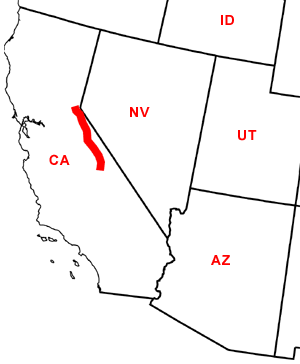

Day Twenty-Three
Independence, CA - Camp Richardson, CA
Date: 07/03/2002
Distance: 276 miles
Weather: Sunny. Cool in the mountains. 90's elsewhere
First stop: Bishop, California. Here we get both information about the Serrria Nevada region, and some excellent pasteries from a local bakery.
Next stop: Mamouth Lakes. High in the mountains this region is ski heaven in the winter and everything else in the summer. We took a long drive up a windy mountain road and stopped only when the road did, at Lake Mary. At first glance this was ideal. Clear water, dogs running free, people wading, and an excellent moderate temperature. When we stepped onto the the sand we saw big signs reading: WARNING: CO2 area. Apparenlty the beach was writhing with some Carbon Dioxide. But, it was a windy day, and we're from the country so we stayed to play.Ogden had the time of her life. She swam (kind of) and played with all of the other dogs. We left completely unaffected by the Carbon or the Dioxide.
Just up the road, we stopped at Mono Lake. Prounounced "moe no" for some reason. It had a long history. The rivers which ran into it, were diverted for drinking water. The water level began to drop and the government didn't care. People who enjoyed the lake, finally made a fuss, and the water level is again rising.
The lake itself is many times more salty than the ocean, and also has a soapy quality. The lake is full of salty structures called "tufa," that have something to do with underground springs. Whatever makes them, they look pretty neat.
Leaving Mono Lake our odometer hit 100,000 miles. Jared photographed this "milestone."
We continued north along the Sierra-Nevadas into Lake Tahoe (CA side). We choose an available campsite around the Emerald Bay state park and drove into town to explore. The lake is beautiful. Driving around it you see blue water framed by mountains. The town is crowded (especially on a holiday) and changes atmosphere immediatley when you enter the Nevada side. There is a ski area here called Heavenly, and unfortunately it is on fire. This does not affect our campsite, and so we photograph the blaze. Luckily it does not seem to be spreading. We have a quick sushi dinner and head back to camp for the night.